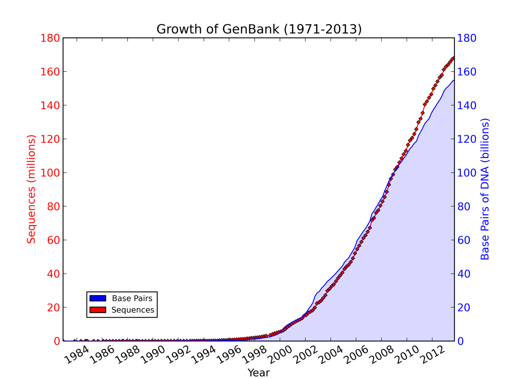

<section>
    <section data-markdown>
        <script type="text/template">
            ## Background

            

            - [International Livestock Research Institute](http://ilri.org) (ILRI)
            - Lots of lab science (beakers! reagents!)
            - Lots of social science (value chains! gender! surveys!)
            - Not really my area...
        </script>
    </section>
    <section data-markdown>
        <script type="text/template">
            ## Lots of data

            

            Bioinformatics and Geoinformatics have increasing data storage and processing needs
        </script>
    </section>
</section>
